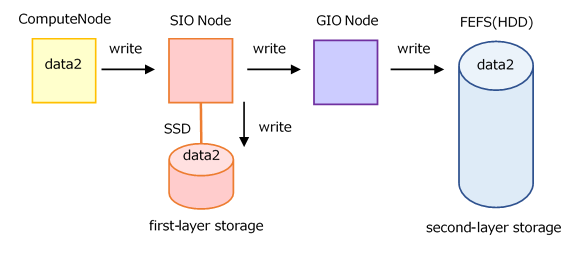
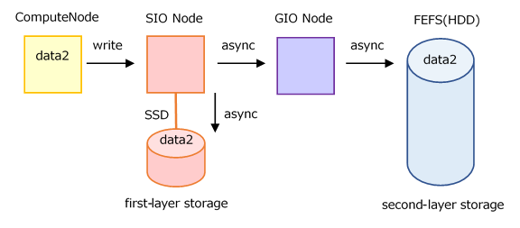

Please note the following points regarding the LLIO provided in this environment.
Please use with the following restrictions. ENOMEM raises an error if the limit is exceeded. (Restriction)
The maximum number of files that a job can open at the same time is 1,024*(thenumberofcomputenodesusedbythejob) or less, which is the total of the three areas provided by LLIO.
When opening the same file from multiple compute nodes, it is counted as one file regardless of the number of compute nodes.
When transferring with llio_transfer and using it as a shared file, it is counted as a different file, so it is counted by the number of compute nodes opened at the same time.
If a stripe count of LLIO is 2 or more, each stripe is counted as one file.
(If even one file has a stripe count of 4, the number of files is counted as 4.)
When using one file from multiple processes, I / O will slow down or SIO from going down unless both of the following two conditions are fulfilled.
The number of nodes where processes that use the same file exist is 7,000 or less.
The total number of processes that use the same file is 28,000 or less.
(No upper limit on the number of processes per compute node)
Files transferred with llio_transfer are treated as different files. Consider using llio_transfer.
The number of files that can be created in the temporary area inside the node is up to 10 million files per compute node. (Restrictions)
You can not get number of blocks and i-node in shared temporary area. (df command shows no data)
There is a case that you can not get correct file size via LLIO when some compute nodes execute the following instructions at the same time on cache area of second-layer storage.
Node A
Node B
truncate
read
truncate
write
truncate
truncate
The cache area of second-layer storage or shared temporary area may have the following behavior:
If file_A is deleted or renamed and recreated on compute node_A, then “open(2)” of file_A fails on compute node_B.
A deleted or renamed file is opened on compute node_A.
FEFS does not have this behavior.
This specification can be addressed by:
On compute node_B, execute the ls command on the parent directory of file_A before “open(2)” file_A.
Compute node_B waits 60 seconds from the re-creation of file_A on compute node_A before “open(2)” file_A.
There is a case that a file may exist on the first-layer storage when you write and delete the file at the same time on cache area of second-layer storage or shared temporary area. (the file will be deleted at job end)
You must set up stripes if you create files in the shared temporary area that are at least the size specified in “sharedtmp-size” per file. Refer to Stripe setting for shared temporary area for more information on stripe setting.
Keep in mind that the following options can affect READ performance
If the “cn-cache-size” option is not set to a large value corresponding to the amount of READ on the application side, processing for cache misses or cache reuse may degrade performance.
If cn-cache-size is not large enough, you can turn OFF “auto-readahead option” to reduce performance degradation. If the auto-readahead setting is ON when the amount of data to be read is larger than the amount of cache on the LLIO client, read-ahead may cause necessary data to be ejected from the cache before it is read by the application, resulting in many cache misses and degraded READ performance.
The pjsub options --all-mount-gfscache and --no-check-gfscache cannot be specified in a job script. If you specify this option, an error occurs when the job is submitted, so specify this option on the command line.
Note
(Restrictions) may change depending on future operational status.
8.6.1. Notes on High Parallel Jobs (1000 or more parallel)¶
Depending on how the file is accessed when running a highly parallel job, I/O can take a long time or place a heavy load on the file system.
This section provides notes on performing file I/O in a highly parallel job. Be sure to check the following for secure file access:.
Files that are commonly read from each rank, such as executables, input data, and configuration parameters, should be placed in first tier storage using llio_transfer.
“2.3.6.9 Standard output/standard error output of the mpiexec command [FX]”
Since maintenance in September 2021, the default setting (PLE_MPI_STD_EMPTYFILE=off) is to not create an empty file if the standard output/standard error output file output is 0.
Create no more than 100,000 file directories in one directory.
In the case of making them at the same time, please limit them to 1000 pieces as described in the next section.
Number of files to be created concurrently in the directory
If you want to output the calculation results of each process to a file at the same time, make sure that you create no more than 1000 files or directories under 1 directory.
For example, to output the calculation results from each process of a 4000 process parallel job to a file, separate the output directories as follows:.
../output/0/Output files up to 0 - 999 processes
1/Output files up to 1000 - 1999 processes
2/Output files up to 2000 - 2999 processes
3/Output files up to 3000 - 3999 processes
Simultaneous file creation and reference processing under a directory
If you output the standard output file from multiple processes to the same directory and then read the executable file from multiple processes, this can put a heavy load on the entire file system.
mpiexec -stdout-proc ./file_stdout ./a.out
The executable should be distributed to the SIO with llio_transfer.
The standard output/standard error output should be output as described in “1. Output to the standard output/standard error output file”.
If you are working with large numbers of files across a highly parallel job, be careful if you are working with large numbers of files per node.
It is described in Important Notices, so please check the content carefully.
Asynchronous close
It provides an asynchronous close function that writes asynchronously when a file is closed.
By using this function, you do not have to wait for the completion of writing, and the job can be finished earlier.
The default is synchronous close, so you may want to enable asynchronous close.
Synchronous Close Image (default)

Synchronous close guarantees completion of write to the first-layer and the second-layer storage at the end of the close.
When a program closes a file, it waits for the file to be written to the second-layer storage.
Asynchronous Close Image

Asynchronous close does not wait for writes to first-layer storage (SSD on SIO), not just to the second-layer storage. It is asynchronous, including writes to the first-layer storage.
The job terminates after the write operation to the second-layer storage is complete. (Write processing does not continue after the job ends.)
However, if the job execution time limit is exceeded or the job becomes abnormal due to node down, the write operation to the second-layer storage is canceled.
If an attempt to write to the second-layer storage fails, “list of unwritten files” is printed on standard error.
Use /2ndfs, which provides direct access to the second-layer storage from compute nodes, if you encounter limitations in using the first-layer storage or if cache utilization is not beneficial.
Keep in mind, however, that capacity cannot be increased like data area.
Read Important Notices for using a file from multiple processes before using MPI-IO.
Attention
Using MPI-IO in the cache area of second-layer storage is a specification that cannot write asynchronously because the cache cannot be used effectively.
For details about performance, see “Performance of File System”.